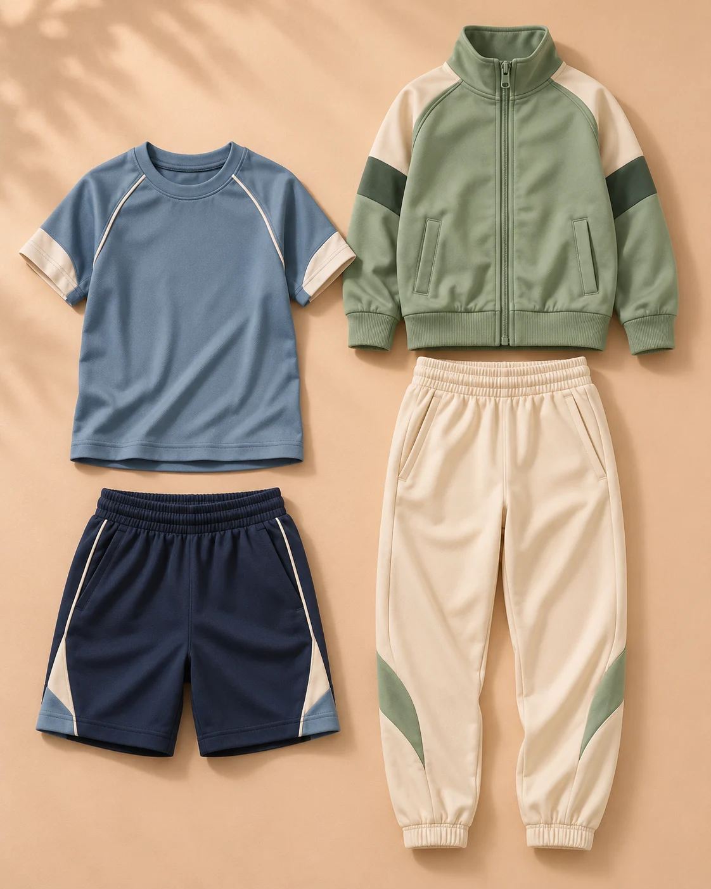
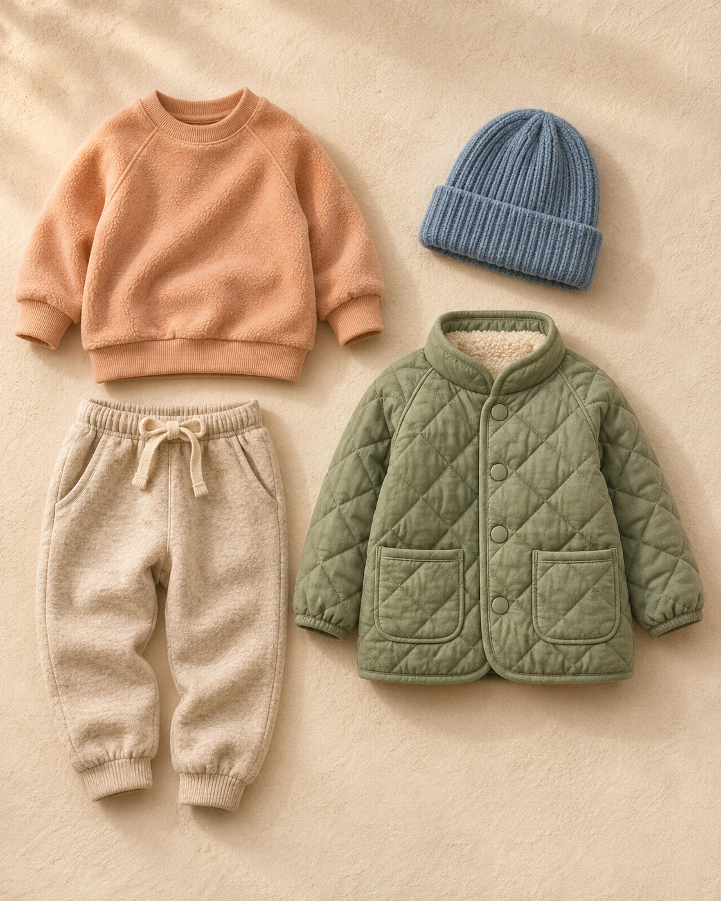

AI-GENERATED CONCEPT
Summer & toddler
Light tops, easy shorts and breezy dresses.
Discuss this direction ↗TODDLER & CHILDREN’S APPAREL · OEM / ODM
Children’s apparel development and manufacturing for brands, importers and retail buyers. From summer essentials to winter layers, let’s bring your next collection to life.

Bulk quantity may span multiple sizes. Typical timing is subject to garment complexity, material availability, order quantity and final sample approval.
ROOM TO GROW
A closer look at children’s apparel made for customers’ OEM orders, from light tops to colourful layers. Customer designs are shown as production examples, not for reproduction or resale.
LITTLE LIVES, IMAGINED
Photorealistic AI-generated models bring original, unbranded clothing ideas into everyday scenes. Explore a direction for your own collection.
All people and garments in this section are AI-generated concepts, created without real-person reference photographs or customer artwork. These are not actual models, manufactured samples or verified product specifications. Any production design, materials and relevant rights require review before manufacture.
EXPLORE A COLLECTION DIRECTION
Illustrative mood boards show how a future children’s collection could feel. These AI-generated images are separate from the real sample gallery above and do not represent manufactured products.
Light tops, easy shorts and breezy dresses.
Discuss this direction ↗
Coordinated outfits made for a movement-led brief.
Discuss this direction ↗
Warm textures, soft layers and seasonal colour stories.
Discuss this direction ↗
CARE IN THE MAKING
From the first sample to the final shipment, Xiang Kang 祥康制衣 connects product development, material sourcing and manufacturing in one clear workflow.
A CLEAR WAY FORWARD
Start with a tech pack, sketch, reference or collection idea.
Review materials, patterns, fit and a physical sample.
Confirm the details before cutting, sewing and finishing.
Coordinate packaging, export documentation and freight.
BUILT AROUND YOUR BUSINESS
Seasonal programs, private-label ranges and coordinated export support.
Develop your ideas through material selection, sampling and production.
Build category programs around clear specifications and approved samples.
LET’S MAKE SOMETHING TOGETHER
Bring a tech pack, a reference garment or an early idea. Let’s find the right starting point.
YARNS, FABRICS & MATERIALS
Discuss cotton yarns, fabric weights and constructions for everyday tops, toddler clothing and seasonal layers.
Explore blend composition and stretch requirements for activewear, fitted pieces and garments designed around movement.
Consider Polyester, nylon, lyocell and project-specific blends according to the design brief, season and target price.
Yarn, fibre content, weight, finish and any required testing are agreed per project. Material availability and specifications are confirmed during development.